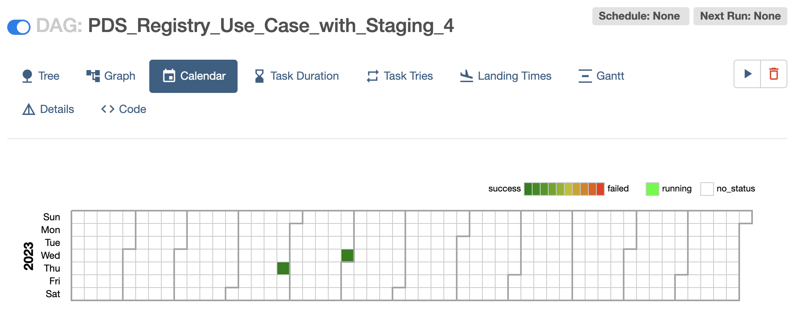
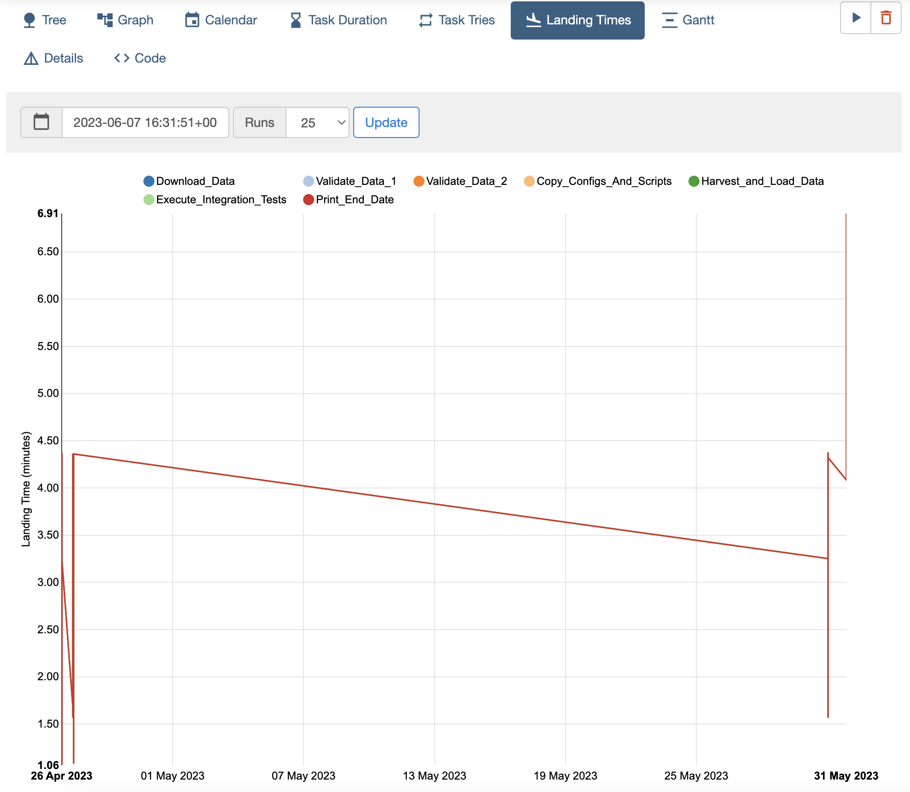

Nucleus Monitoring User Guide
The workflow execution on Nucleus can be monitored using the following 2 features.
Airflow UI
CloudWatch Dashboard
Monitoring Using Airflow UI
Airflow UI contains many useful views to monitor the execution of a workflow.
To use the Airflow, it is required to login to the Airflow UI as follows.
Login to AWS (NGAP) with NGAPShApplicationDeveloper role.
Visit Airflow UI of Nucleus (https://us-west-2.console.aws.amazon.com/mwaa/home?region=us-west-2#environments/PDS-Nucleus-Airflow-Env/sso).
After you logged into the Airflow UI, the following views can be used to monitor the execution of workflows.
DAGs View – List of DAGs in Airflow environment
Tree View - Visualization of DAG’s dependencies and their current status for a specific run as a tree
Graph View - Visualization of DAG’s dependencies and their current status for a specific run as a graph
Calendar View - An overview of your entire DAG’s history over months, or years
Task Duration - The duration of different tasks over the past N runs
Task Tries - Shows a line graph of the number of tries for each task in a DAG run over time
Landing Times - Airflow landing times are calculated from the task’s scheduled time to the time the task finishes, either with success or another state
Gantt Chart - Provides a way to analyze task durations and overlaps
More details about these views are available at: https://airflow.apache.org/docs/apache-airflow/stable/ui.html
Where in the pipeline is currently executing?
The Graph view or Tree view can be used to check the progress of a workflow as shown in the following screenshots.
To view the Tree view and Graph view:
Click on the DAG name in the home page (DAGs view) of the Airflow UI

Click on the Tree tab to see the Tree View.
To check the Graph View, click on the Graph tab.
The status of each task is represented with following color codes.

What/if something has failed?
If a task is failed, then it will be marked in red color in Grid view and Tree view. The following screenshot shows an example for a failed task (Execute_Integration_Tests).

When has it completed successfully?
If a workflow is completed successfully, all tasks of the workflow will appear in dark green color as shown in the following screenshot.
Please note that in the following screenshot, only the second execution tree from the left is successful.
Note
It is possible to write a DAG (workflow) in such a way, that the last task of the workflow can be successful, only if all the parent tasks are successful by using a trigger rule called all_success in the DAG python file. This is the default trigger rule.
# Print end date
print_end_date = BashOperator(
task_id='Print_End_Date',
bash_command='date',
trigger_rule=TriggerRule.ALL_SUCCESS
)
In the examples shown above, the trigger rule for the last task is given as all_done (that means all parent tasks of the workflow are completed, regardless of their success/failed status).
# Print end date
print_end_date = BashOperator(
task_id='Print_End_Date',
bash_command='date',
trigger_rule=TriggerRule.ALL_DONE
)
How to see the failure reports from the specific tools?
If there is a failed tasks there are 2 ways to check the logs coming from the task.
Using the Airflow UI
Using CloudWatch Dashboard
Checking logs using the Airflow UI
It is possible to check an overview of logs by clicking on the failed task in Grid view or Tree view as shown in the following screenshots.
To view an overview of logs for a task:
Click on the task (in this example, click on Validate_Task)
Click on the “Log” button.

This will load the overview of logs as follows.
However, if it is required to read detailed logs, the CloudWatch dashboard can be used as explained in the next section.
Monitoring Using CloudWatch Dashboard
Most of the Nucleus components and tasks produce CloudWatch logs. These logs are stored in CloudWatch log groups. The CloudWatch dashboard is used to see these logs. Each PDS Node has a CloudWatch Dashboard specific to that Node.
To view CloudWatch Dashboard.
Visit the CloudWatch Dashboard URL specific to your PDS Node
Login with your Cognito username and password
After authentication you will be redirected to your PDS Node Dashboard
The CloudWatch Dashboard contains Widgets that show the logs coming from Nucleus workflows as shown in the following screenshots.
It is possible to maximize these widgets to get a better view of logs of specific tasks as follows.

Additional Views in Airflow UI to Monitor Workflows
In addition to the Airflow Views explained above, following Airflow Views can be also used to monitor workflows.
Calendar View
An overview of your entire DAG’s history over months, or years.
Task Duration
The duration of different tasks over the past N runs.

Task Tries
Shows a line graph of the number of tries for each task in a DAG run over time.
Landing Times
Airflow landing times are calculated from the task’s scheduled time to the time the task finishes, either with success or another state.
Gantt Chart
Provides a way to analyze task durations and overlaps.